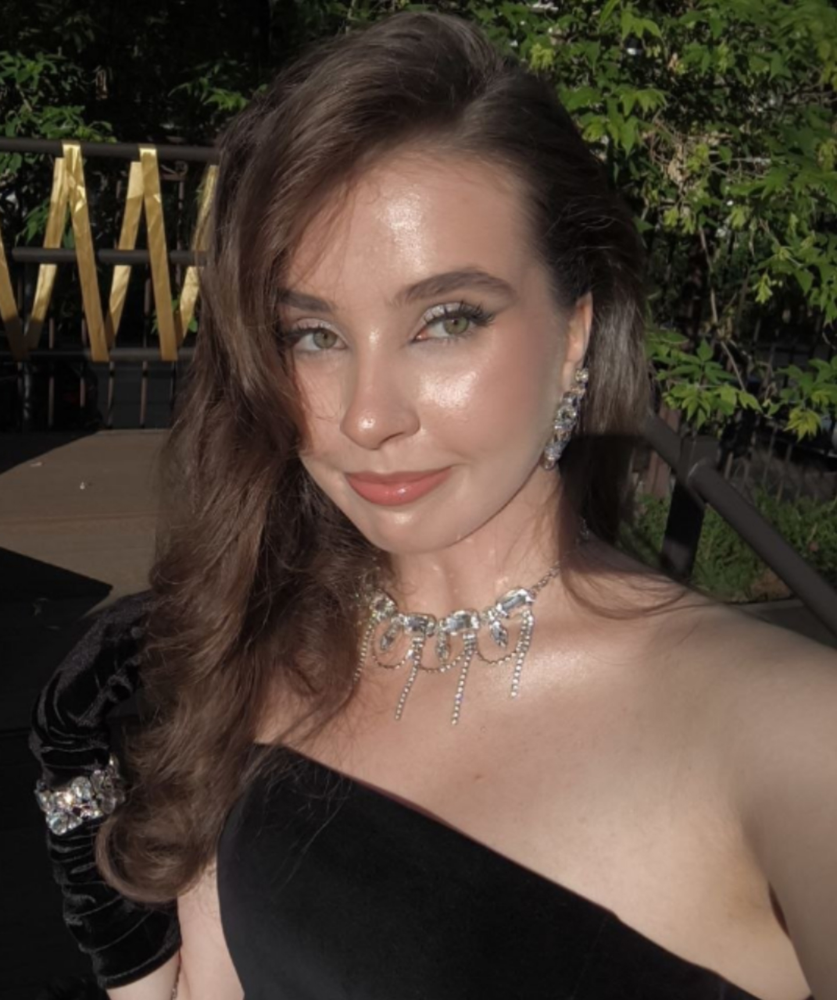
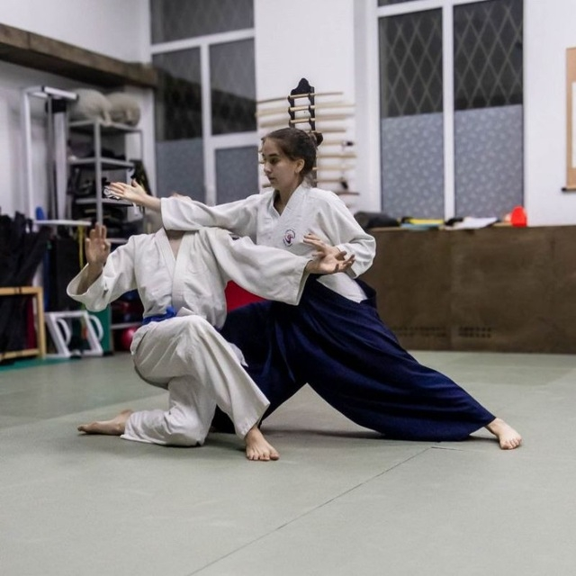
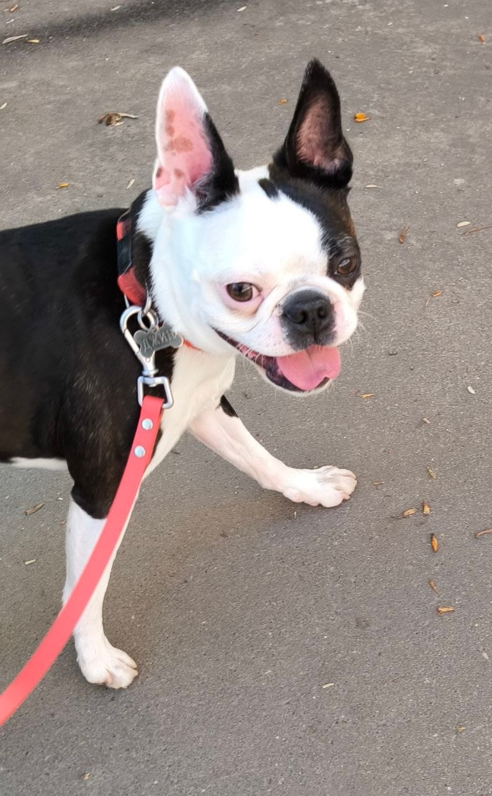
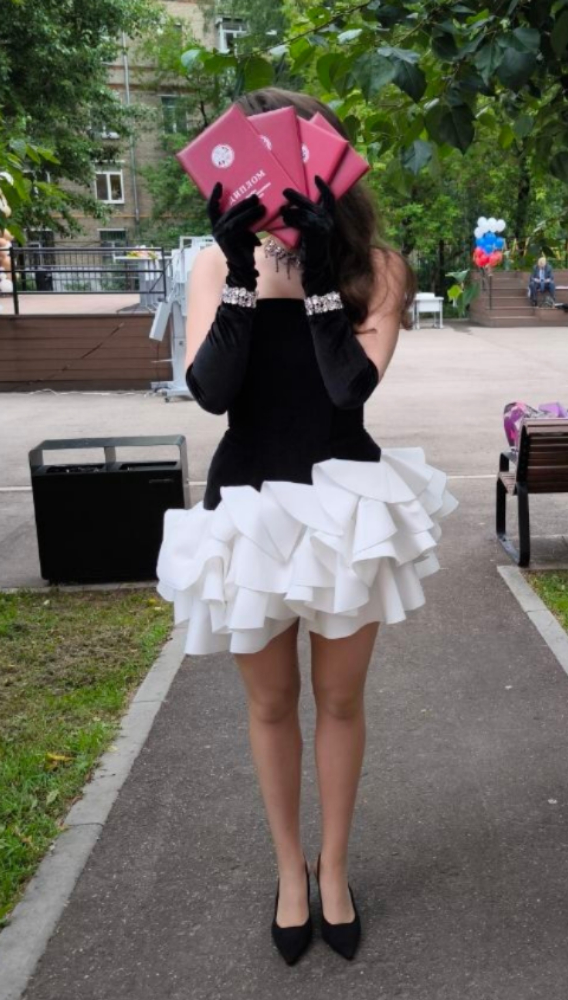

Место учебы
Фундаментальная и компьютерная лингвистика, НИУ ВШЭ, Москва
Человек, умеющий гламурно создавать HTML

Нилус, а не Наутилус Помпилус!!!
Фундаментальная и компьютерная лингвистика, НИУ ВШЭ, Москва
Москва
ИТШ
♥ Я почти всю жизнь (14) лет занимаюсь айкидо
♥ У меня коричневый пояс (1 кю)
♥ Я уже много лет играю на гитаре и фортепиано, люблю музыку
♥ Я умею петь
♥ У меня есть чудесный бостон-терьер Джин
♥ Я взяла четыре диплома Всероса (два по русскому, еще два - по литературе)
♥ Разбираюсь в искусстве, обожаю театр


